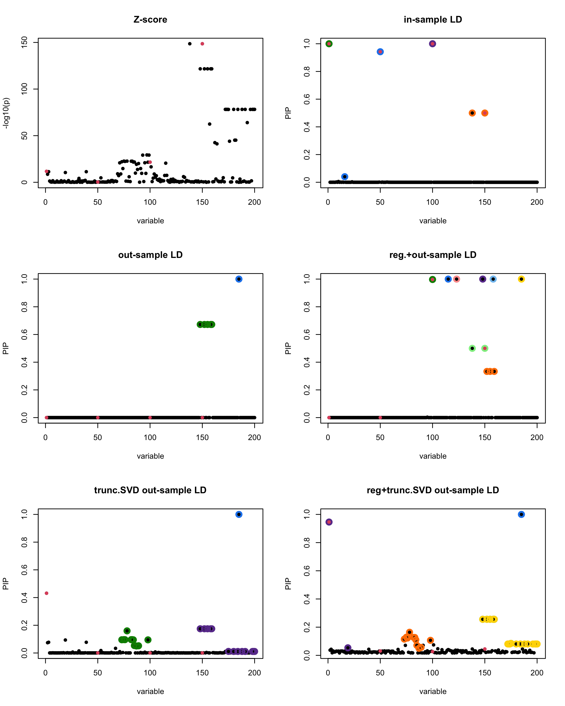
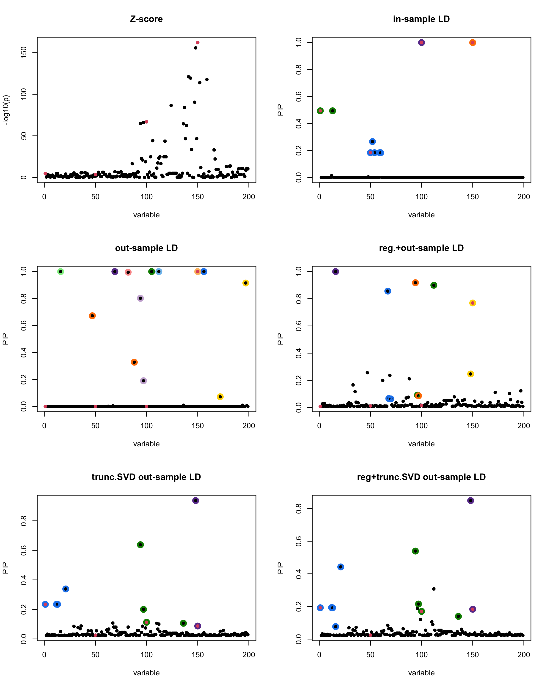
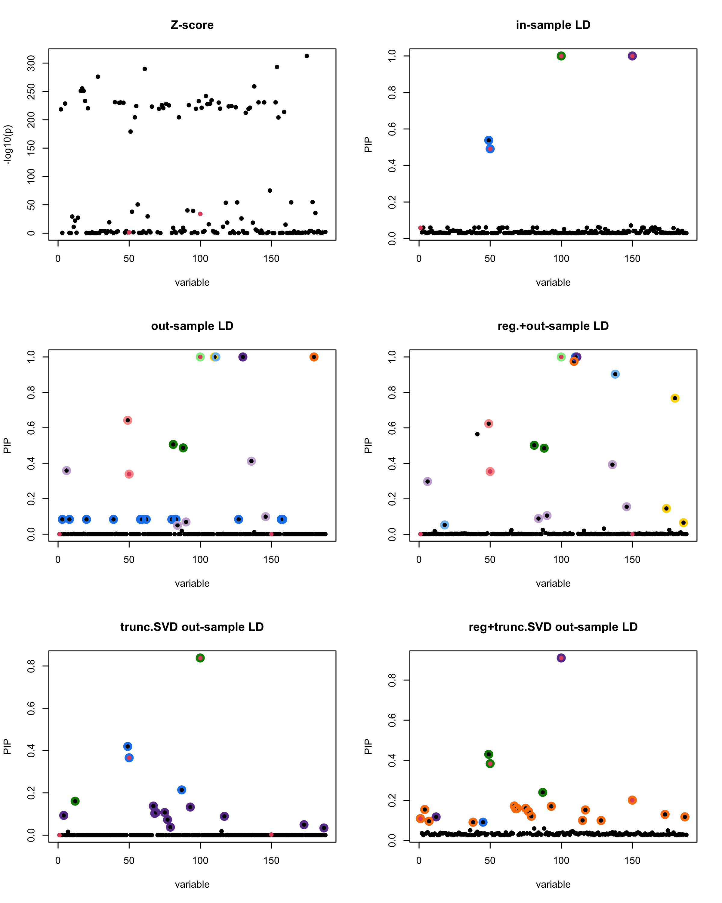

Last updated: 2025-08-22
Checks: 7 0
Knit directory: Improved_LD_SuSiE/
This reproducible R Markdown analysis was created with workflowr (version 1.7.1). The Checks tab describes the reproducibility checks that were applied when the results were created. The Past versions tab lists the development history.
Great! Since the R Markdown file has been committed to the Git repository, you know the exact version of the code that produced these results.
Great job! The global environment was empty. Objects defined in the global environment can affect the analysis in your R Markdown file in unknown ways. For reproduciblity it’s best to always run the code in an empty environment.
The command set.seed(20250821) was run prior to running
the code in the R Markdown file. Setting a seed ensures that any results
that rely on randomness, e.g. subsampling or permutations, are
reproducible.
Great job! Recording the operating system, R version, and package versions is critical for reproducibility.
Nice! There were no cached chunks for this analysis, so you can be confident that you successfully produced the results during this run.
Great job! Using relative paths to the files within your workflowr project makes it easier to run your code on other machines.
Great! You are using Git for version control. Tracking code development and connecting the code version to the results is critical for reproducibility.
The results in this page were generated with repository version e01c281. See the Past versions tab to see a history of the changes made to the R Markdown and HTML files.
Note that you need to be careful to ensure that all relevant files for
the analysis have been committed to Git prior to generating the results
(you can use wflow_publish or
wflow_git_commit). workflowr only checks the R Markdown
file, but you know if there are other scripts or data files that it
depends on. Below is the status of the Git repository when the results
were generated:
Ignored files:
Ignored: .DS_Store
Untracked files:
Untracked: data/Thyroid_ENSG00000132855.rds
Untracked: initial_workflowr.R
Note that any generated files, e.g. HTML, png, CSS, etc., are not included in this status report because it is ok for generated content to have uncommitted changes.
There are no past versions. Publish this analysis with
wflow_publish() to start tracking its development.
In this experiment, we compare the SuSiE model for summary statistics under different types of the LD matrices. There are 5 types of covariance matrices as we mentioned earlier in the beginning of the page. Let’s recall here once more
In-sample LD matrix: Gold standard
Out-sample LD matrix: LD matrix \(\widehat{R}\) calculated from a out-of-sample data
Regularized: \(\widehat{R}_{\lambda} = (1-\lambda) * \widehat{R} + \lambda * I\) with \(\lambda = 0.1\)
Truncated SVD: \(\tilde{R}\) as presented in the paper
TSVD + Reg.: \(\tilde{R}_{\lambda} = (1-\lambda) * \tilde{R} + \lambda * I\) with \(\lambda = 0.1\)
We used the Thyroid data which can be found in the data folder of the source code of this page. The size of the data is \(n \times P\) where \(n = 547\) is the sample size and \(P=7470\) is the total number of SNPs.
library(susieR)
gtex <- readRDS("data/Thyroid_ENSG00000132855.rds")In the following, we provide the coded-up function for the experiment where the outputs are SuSiE plots with their corresponding LD matrix. In terms of the procedure, we
removed the SNPs with \(MAF < 0.01\),
randomly splitted the Thyroid data into two subsamples called in-sample (\(n_1=474\)) and out-of-sample (\(n_2=100\)) with \(p = 200\). To maintain the correlation between Xs, we subsampled in a way that took consecutive SNPs.
standardized both sample matrices and calculated the out-sample LD matrix.
generated data from the in-sample X matrix where the chosen causal SNPs are in the set \(\{1, 50, 100,150\}\) the corresponding non-zeros \(\beta\)s are \(2,1,-2,3\). Specifically, \[y = X_{\text{in}}\boldsymbol{\beta} + \epsilon, \text{ where } \epsilon \sim \mathcal{N}_{474}(0,\sigma^2I_{474}), \boldsymbol{\beta} = \sum_{l=1}^4\boldsymbol{\beta}_l, \boldsymbol{\beta}_l = \gamma_l\beta_l,\] where \(\gamma_1, \gamma_2, \gamma_3, \gamma_4\) are vectors of all zero but only one value 1 in position \(1, 50, 100, 150\), respectively, and \({\beta_1,\beta_2, \beta_3,\beta_4} = (2,1,-2,3)\). Standardized \(y\).
Fitted univariate regression for \((y, X_{\text{in}})\) and calculated the Z-scores.
Let’s see how the different LD matrices affect the detection of causal SNPs.
seed_vary = function(seed)
{
set.seed(seed)
print(paste("This is seed number", seed))
## good example: seed 3, 4, 8, 10, 11, 12
## bad example: seed 5
# Remove SNPs with MAF < 0.01
maf = apply(gtex, 2, function(x) sum(x)/2/length(x))
X0 = gtex[, maf > 0.01]
dim(X0)
X = na.omit(X0)
dim(X)
snp_total = ncol(X0)
n = nrow(X0)
p = 200
# Start from a random point on the genome
indx_start = sample(1: (snp_total - p), 1)
X = X0[, indx_start:(indx_start + p -1)]
# View(cor(X)[1:10, 1:10])
## sub-sample into two
out_sample = sample(1:n, 100)
X_out = X[out_sample, ]
X_in = X[setdiff(1:n, out_sample), ]
sum(is.na(X_out))
rm_p = c(which(diag(cov(X_in))==0), which(diag(cov(X_out))==0))
length(rm_p)
indx_p = setdiff(1:p, rm_p)
X_in = X_in[, indx_p]
X_out = X_out[, indx_p]
## Standardize both sample matrices
X_in <- scale(X_in)
X_out <- scale(X_out)
## out-sample LD matrix
R_hat = cor(X_out)
R = cor(X_in)
# View(R_hat[1:10, 1:10])
# View(R[1:10, 1:10])
# View(cor(X)[1:10, 1:10])
## generate data from in-sample X matrix
p = ncol(X_in)
beta <- rep(0,p)
n = nrow(X_in)
beta[c(1, 50, 100, 150)] <- c(2, 1, -2, 3)
# plot(beta, pch=16, ylab='effect size')
y <- X_in %*% beta + rnorm(n)
y = scale(y)
## compute summary statistics
sumstats <- univariate_regression(X_in, y)
z_scores <- sumstats$betahat / sumstats$sebetahat
# susie_plot(z_scores, y = "z", b=beta)
min_cor = 0.01
## fit the susie-rss model with in-sample R
fitted_rss1 <- susie_rss(bhat = sumstats$betahat, shat = sumstats$sebetahat, n = n,
R = R, var_y = var(y), L = 10,
estimate_residual_variance = TRUE,
min_abs_corr=min_cor)
# summary(fitted_rss1)$cs
# p1 = susie_plot(fitted_rss1, y="PIP", b=beta)
## fit the model with out-sample R
fitted_rss2 <- susie_rss(bhat = sumstats$betahat, shat = sumstats$sebetahat, n = n,
R = R_hat, var_y = var(y), L = 10,
estimate_residual_variance = FALSE,
min_abs_corr=min_cor)
# will have problem non-positive cov if estimate_residual_variance = TRUE
# summary(fitted_rss2)$cs
# p2 = susie_plot(fitted_rss2, y="PIP", b=beta) ## miss the true or does not run
## adjusted by identity matrix
lambda = 0.1
R_hat_lambd = (1-lambda) * R_hat + lambda * diag(p)
fitted_rss3 <- susie_rss(bhat = sumstats$betahat, shat = sumstats$sebetahat, n = n,
R = R_hat_lambd, var_y = var(y), L = 10,
estimate_residual_variance = F,
min_abs_corr=min_cor)
# will have problem non-positive cov if estimate_residual_variance = TRUE
# summary(fitted_rss3)$cs
# susie_plot(fitted_rss3, y="PIP", b=beta)
## using truncated SVD
alph = 1
XtY = t(X_in) %*% y
ZZ = XtY %*% t(XtY)
R_hat_minus = R_hat - alph * ZZ / (n-1)^2
eigen_R = eigen(R_hat_minus)
eigen_R$values
V <- eigen_R$vectors
D_plus <- diag(pmax(eigen_R$values, 0))
R_hat_plus <- V %*% D_plus %*% solve(V) + alph * ZZ / (n-1)^2
fitted_rss4 <- susie_rss(bhat = sumstats$betahat, shat = sumstats$sebetahat, n = n,
R = R_hat_plus, var_y = var(y), L = 10,
estimate_residual_variance = F,
min_abs_corr=min_cor)
# summary(fitted_rss4)$cs
# susie_plot(fitted_rss4, y="PIP", b=beta)
## combine strategy
lambda = 0.1
R_hat_plus_diag = (1-lambda) * R_hat_plus + lambda * diag(p)
fitted_rss5 <- susie_rss(bhat = sumstats$betahat, shat = sumstats$sebetahat, n = n,
R = R_hat_plus_diag, var_y = var(y), L = 10,
estimate_residual_variance = F,
min_abs_corr=min_cor)
# summary(fitted_rss5)$cs
# susie_plot(fitted_rss5, y="PIP", b=beta)
par(mfrow = c(3, 2))
susie_plot(z_scores, y = "z", b=beta)
title('Z-score')
susie_plot(fitted_rss1, y="PIP", b=beta)
title('in-sample LD')
susie_plot(fitted_rss2, y="PIP", b=beta)
title('out-sample LD')
susie_plot(fitted_rss3, y="PIP", b=beta)
title('reg.+out-sample LD')
susie_plot(fitted_rss4, y="PIP", b=beta)
title('trunc.SVD out-sample LD')
susie_plot(fitted_rss5, y="PIP", b=beta)
title('reg+trunc.SVD out-sample LD')
print(paste("Minimum eigenvalue is:",min(eigen_R$values,"corresponding to the seed", seed)))
}We vary the random seed to be from \(1-20\).
The following table record cases where the TSVD LD matrix provide a “better”, equal or worse PIP output compare to the out-sample LD matrix. The “better” here is in the mean that improving power detecting the causal SNPs, and less FDR.
| Result | seed 1 | seed 2 | seed 3 | seed 4 | seed 5 | seed 6 | seed 7 | seed 8 | seed 9 | seed 10 | seed 11 | seed 12 | seed 13 | seed 14 | seed 15 | seed 16 | seed 17 | seed 18 | seed 19 | seed 20 |
|---|---|---|---|---|---|---|---|---|---|---|---|---|---|---|---|---|---|---|---|---|
| better | ■ | ■ | ▲ | ▲ | ▲ | ■ | ■ | ■ | ▲ | ▲ | ▲ | ⬤ | ▲ | |||||||
| equal | ✓ | ✓ | ||||||||||||||||||
| worse | x | x | x | x |
Note
■ for case where the TSVD improved the power and reduce the FDR compare to out-sample LD.
● for case where the TSVD improved the power but increased the FDR compare to out-sample LD.
▲ for case where the TSVD maintained the same power but reduced the FDR compare to out-sample LD.
[1] “This is seed number 1” [1] “Minimum eigenvalue is: -3.711724”
[1] “This is seed number 2” [1] “Minimum eigenvalue is: -1.989602”
[1] “This is seed number 3” [1] “Minimum eigenvalue is: -0.9986563”
[1] “This is seed number 4” [1] “Minimum eigenvalue is: -0.3631381”
[1] “This is seed number 5” [1] “Minimum eigenvalue is: -0.7655705”
[1] “This is seed number 6” [1] “Minimum eigenvalue is: -2.874186”
[1] “This is seed number 7” [1] “Minimum eigenvalue is: -1.981569”
[1] “This is seed number 8” [1] “Minimum eigenvalue is: -1.601618”
[1] “This is seed number 9” [1] “Minimum eigenvalue is: -1.278852”
[1] “This is seed number 10” [1] “Minimum eigenvalue is: -0.4129873”
[1] “This is seed number 11” [1] “Minimum eigenvalue is: -3.993101”
[1] “This is seed number 12” [1] “Minimum eigenvalue is: -2.219522”
[1] “This is seed number 13” [1] “Minimum eigenvalue is: -3.037011”
[1] “This is seed number 14” [1] “Minimum eigenvalue is: -1.119388”
[1] “This is seed number 15” [1] “Minimum eigenvalue is: -2.52149”
[1] “This is seed number 16” [1] “Minimum eigenvalue is: -2.84049”
[1] “This is seed number 17” [1] “Minimum eigenvalue is: -2.866559”
[1] “This is seed number 18” [1] “Minimum eigenvalue is: -0.6496066”
[1] “This is seed number 19” [1] “Minimum eigenvalue is: -1.861127”
[1] “This is seed number 20” [1] “Minimum eigenvalue is: -0.7103139”
sessionInfo()R version 4.3.1 (2023-06-16)
Platform: aarch64-apple-darwin20 (64-bit)
Running under: macOS Ventura 13.1
Matrix products: default
BLAS: /Library/Frameworks/R.framework/Versions/4.3-arm64/Resources/lib/libRblas.0.dylib
LAPACK: /Library/Frameworks/R.framework/Versions/4.3-arm64/Resources/lib/libRlapack.dylib; LAPACK version 3.11.0
locale:
[1] en_US.UTF-8/en_US.UTF-8/en_US.UTF-8/C/en_US.UTF-8/en_US.UTF-8
time zone: America/Chicago
tzcode source: internal
attached base packages:
[1] stats graphics grDevices utils datasets methods base
other attached packages:
[1] kableExtra_1.4.0 knitr_1.43 susieR_0.14.2 workflowr_1.7.1
loaded via a namespace (and not attached):
[1] sass_0.4.7 utf8_1.2.4 generics_0.1.3 xml2_1.3.5
[5] stringi_1.8.4 lattice_0.21-8 digest_0.6.33 magrittr_2.0.3
[9] evaluate_0.21 grid_4.3.1 fastmap_1.1.1 plyr_1.8.8
[13] rprojroot_2.0.3 jsonlite_1.8.7 Matrix_1.6-0 processx_3.8.2
[17] whisker_0.4.1 reshape_0.8.10 mixsqp_0.3-54 ps_1.7.5
[21] promises_1.2.0.1 httr_1.4.6 fansi_1.0.6 viridisLite_0.4.2
[25] scales_1.3.0 textshaping_0.3.6 jquerylib_0.1.4 cli_3.6.2
[29] rlang_1.1.4 crayon_1.5.2 munsell_0.5.1 cachem_1.0.8
[33] yaml_2.3.7 tools_4.3.1 dplyr_1.1.4 colorspace_2.1-0
[37] ggplot2_3.5.1 httpuv_1.6.11 vctrs_0.6.5 R6_2.5.1
[41] matrixStats_1.3.0 lifecycle_1.0.4 git2r_0.36.2 stringr_1.5.1
[45] fs_1.6.3 irlba_2.3.5.1 pkgconfig_2.0.3 callr_3.7.3
[49] pillar_1.9.0 bslib_0.5.0 later_1.3.1 gtable_0.3.5
[53] glue_1.7.0 Rcpp_1.0.12 systemfonts_1.2.3 highr_0.10
[57] xfun_0.39 tibble_3.2.1 tidyselect_1.2.1 rstudioapi_0.15.0
[61] htmltools_0.5.5 svglite_2.2.1 rmarkdown_2.23 compiler_4.3.1
[65] getPass_0.2-4